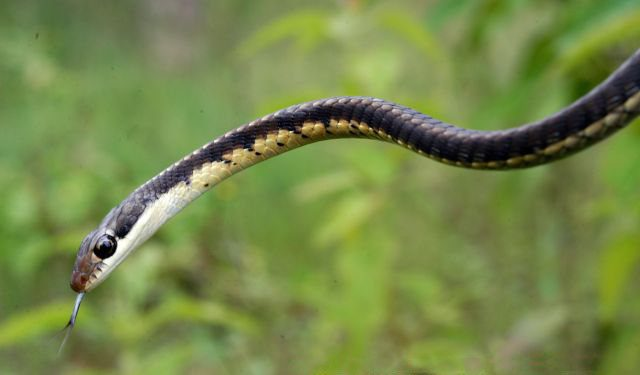

ब्रॉन्ज़बैक साँपCommon Bronzeback Tree Snake
Dendrelaphis tristis · Colubridae · REP-0020

- Scientific name
- Dendrelaphis tristis (Linnaeus, 1758)
- Family
- Colubridae
- Hindi
- ब्रॉन्ज़बैक साँप
- Local names
- bronzeback, bronze back saamp, ped ka saamp, tree snake
- Status here
- native
- IUCN
- LC
- Review
- audited and independently read
When to look कब देखें
Present all year.
ब्रॉन्ज़बैक साँप / Common Bronzeback Tree Snake
Dendrelaphis tristis (Linnaeus, 1758) — Colubridae
ब्रॉन्ज़बैक साँप — मंग, पीपल और नीम के पेड़ों पर, ऊँची शाख़ों पर रहने वाला एक बिल्कुल हानिरहित, तेज़ चलने वाला और दिन में सक्रिय सांप। हरा-पीला या भूरा रंग, चिकना शरीर, लंबी पूँछ। छिपकलियों का शिकारी, बहुत तेज़, हवा की गति से पेड़ की शाख़ों पर दौड़ता है। कभी काटता नहीं, बस डर के मारे मुँह खोल देता है। इसे करैत या कोबरा के साथ गलत नहीं समझा जा सकता क्योंकि रंग ही अलग है।
Quick Identification त्वरित पहचान
| Feature | Description |
|---|---|
| Size | 60–100 cm; very slender body |
| Colour | Olive-green, yellow-green, or bronze-brown dorsally; unmarked or with faint bands |
| Head | Pointed, not wider than neck; eyes large and prominent |
| Tail | Long and prehensile (about 1/3 of total length); used for climbing |
| Scales | Smooth and glossy; 15 rows at midbody |
| Behaviour | Diurnal; arboreal; fast-moving; no banding (unlike krait or kukri) |
| Behaviour | Never bites when handled; may open mouth in threat display |
Field tip: A slender, uniformly green or brown tree snake moving at high speed along a branch at midday. The long prehensile tail, large eyes, and daytime activity are distinctive. Completely harmless; never bites.
Morphology आकारिकी
Biometrics (typical measurements for northern Indian populations):
| Measurement | Range |
|---|---|
| Total length | 60–100 cm |
| Body length | 40–70 cm |
| Tail length | 20–35 cm |
| Weight | 60–150 g |
Head and eyes: Head is pointed, barely wider than the neck. Eyes are large and prominent with a round pupil, a key character showing this is an active daytime hunter. The eye is adapted to focus on fast-moving prey.
Body and scales: Body is extremely slender and slightly laterally compressed (flattened side to side), an adaptation for moving along branches. Dorsal scales are smooth, arranged in 15 rows at midbody. Colour is uniform olive-green, yellow-green, or bronze-brown, often with a slight sheen giving the "bronze" name. The belly is pale yellow or cream.
Tail: Long and prehensile (can wrap around branches), making up about 1/3 of the total length. The tail is as important for climbing as the legs.
हिंदी: बहुत पतला, हरा या भूरा, चिकना, लंबी पूँछ जो पेड़ की शाख़ों को पकड़ सकती है। आँखें बड़ी, दिन में शिकार करने के लिए। कभी काटता नहीं।
Behaviour & Ecology व्यवहार और पारिस्थितिकी
An obligate tree-dweller, spending its entire life from hatch to death in the canopy. It hunts during the day, moving with surprising speed along branches, hunting small lizards, chameleons, geckos, and occasionally insects or birds. The large eyes are adapted to tracking fast-moving prey in the dappled light of the canopy.
The prehensile tail is not used for prey capture but as a climbing aid, allowing the snake to extend itself further along thinner branches in pursuit. It is an agile, balletic hunter, and watching one hunt is remarkable.
When threatened, it opens its mouth in a threat display and may hiss, but it never bites. It will fall from a branch rather than bite a large creature.
It is preyed upon by larger snakes, eagles, and other raptors, but its speed and arboreal habitat provide good protection.
हिंदी: पेड़ों पर रहता है, कभी नीचे नहीं उतरता। दिन में छिपकलियों का शिकार करता है, तेज़ रफ़तार से शाख़ों दौड़ता है। पूँछ से शाख़ें पकड़ता है। डर से मुँह खोलता है, पर काटता नहीं।
Life Cycle / Phenology जीवन चक्र
| Season | Event |
|---|---|
| November–February | Dormant in deep crevices or dense foliage; no feeding |
| March–April | Emergence and mating |
| May–August | Egg-laying (oviparous); females lay eggs in hollow branches or cavities |
| June–October | Hatchlings active; reaching 25–30 cm by autumn |
| Maturity | Reached within 2–3 years |
| Lifespan | 8–10 years in the wild |
Host Plants or Prey आहार
- Garden lizards (Calotes)
- Geckos (Hemidactylus, Gehyra)
- Chameleons (Chamaeleo)
- Skinks (Mabuya)
- Small birds and insects (occasionally)
Predators / Natural Enemies शत्रु
- Large snakes (Indian Cobra, king cobra, large rat snakes)
- Birds of prey (eagles, hawk-eagles, kites)
- Tree-climbing mammals (mongooses, palm civets)
- Larger monitor lizards
Agricultural / Human Relevance कृषि प्रासंगिकता
Garden benefit. The Common Bronzeback is an excellent predator of garden and orchard lizards, which may themselves be agricultural pests or neutral. Its presence in a mango or fruit tree is generally beneficial or neutral, never harmful.
No danger. Completely harmless to humans. Never bites, even when captured. Often welcome in orchards for its predatory role.
Safety note. Because it is bright green and visible during the day, it is rarely mistaken for a dangerous species and is less likely to be killed than snakes that are more cryptic.
Today. No economic use, but generally tolerated. Locally known and appreciated in many village areas.
Expected Locally स्थानीय रूप से अपेक्षित
Not a field record. Written from published accounts for eastern Uttar Pradesh. No confirmed local sighting yet — if you have seen it, that is what the atlas needs.
अभी तक स्थानीय पुष्टि नहीं। यह विवरण प्रकाशित स्रोतों से है, किसी अवलोकन से नहीं।
Expected in mango orchards, peepal trees, roadside trees, and any habitation with well-developed tree cover from March to November. Particularly common during the breeding season of garden lizards (April–August). Daytime visibility makes it easier to observe than many other snakes.
Distribution वितरण
Global range: Indian subcontinent and Southeast Asia, from India through Myanmar, Thailand, Laos, and Cambodia.
In India: Throughout the forested regions and agricultural plains, widespread in the peninsular and Gangetic regions.
In Uttar Pradesh: Common in eastern and central districts wherever tree cover exists.
In Basti district / eastern UP: Common in mango orchards, homestead groves, and tree-lined villages from March to November.
Research Questions शोध प्रश्न
Anyone can investigate these | कोई भी इन प्रश्नों की जाँच कर सकता है
- How many Common Bronzebacks can be seen in a mango orchard on a sunny morning in May? / मई की धूप की सुबह एक आम के बाग में कितने पेड़ की कौड़िए दिख सकते हैं? — Walk an orchard at 8–10 AM, watch the main branches.
- What percentage of garden lizards are taken by bronzebacks vs. other predators? — Watch for predation attempts.
- How does the activity level change with temperature and time of day? — Record sightings by hour and air temperature.
- Where do females lay eggs in the local area? — Search hollow branches and crevices in June–July.
- Can children identify this harmless snake and distinguish it from dangerous ones? — Test with photos and live snakes.
Similar Species मिलती-जुलती प्रजातियाँ
| Species | How to tell apart | हिंदी |
|---|---|---|
| Indian Cobra (Naja naja) | Much larger (100+ cm), can spread hood, less graceful, often on ground, venomous | बहुत बड़ा, फन फैलाता है, जहरीला |
| Common Krait (Bungarus caeruleus) | Much larger (100+ cm), banded, nocturnal, on ground, venomous | करैत बड़ा, बैंडेड, रात का, जहरीला |
| Common Wolf Snake (Lycodon aulicus) | Banded, terrestrial climber (not tree-specialist), smaller eyes, on walls/ground | बैंडेड, दीवारों पर चढ़ता है |
| Green pit vipers (if present in eastern UP) | Venomous, broad head, shorter tail, less agile | विषधर (अगर हों), कम चुस्त |
Field rule: A slender, uniformly green or bronze-brown snake moving fast along a tree branch during the day with a long prehensile tail is a Common Bronzeback and is completely harmless.
Taxonomy & Classification वर्गीकरण
Original description. Described by Carl Linnaeus in 1758 in Systema Naturae, 10th edition, as Coluber tristis. The epithet tristis means "sad" in Latin, of uncertain biological meaning.
Subspecies. The subspecies Dendrelaphis tristis tristis occurs in the Indian plains; D. t. sinharajensis is recognized from Sri Lanka.
Family and order placement. Colubridae, a large cosmopolitan family of non-venomous snakes; order Squamata, class Reptilia.
Phylogenetic notes. Dendrelaphis is a genus of slender, diurnal, tree-dwelling colubrids found across Asia. The genus is monophyletic within Colubridae.
IUCN status rationale. Least Concern. Widespread, abundant, and adaptable to human-modified habitats; no major threats.
Photo Gallery फोटो गैलरी
Photos needed आवश्यक फोटो
- [ ] Snake on a branch, showing posture (शाख़ पर सांप)
- [ ] Head detail showing large eyes (बड़ी आँखें)
- [ ] Full-body colouration showing bronze or green (रंग दिखता हुआ)
No photos yet — add field photos to media/species/common_bronzeback/ and run node scripts/sync_photos.js.
Atlas Connections संबंधित प्रजातियाँ
- Oriental Garden Lizard — primary prey in many habitats
- Indian Cobra — larger predator that may hunt this species
- Barn Owl — nocturnal predator despite bronzeback being diurnal
- Mango — primary tree habitat in eastern UP
References संदर्भ
- Linnaeus, C. (1758). Systema Naturae, 10th edition. p. 224. Stockholm. [original description as Coluber tristis]
- Boulenger, G.A. (1893). Catalogue of the Snakes in the British Museum, vol. 1. British Museum, London.
- Smith, M.A. (1943). The Fauna of British India, Ceylon and Burma, Including the Whole of the Indo-Chinese Sub-Region. Reptilia and Amphibia, vol. 3. Taylor and Francis, London.
- Wallach, V., Wynn, A.H. & Brooks, D.R. (2014). Assessment of the Higher-Level Phylogeny within Colubroidea. ZooKeys, 406, 1–35.
- Das, I. (2002). A Photographic Guide to Snakes and Other Reptiles of India. New Holland Publishers, London.
- GBIF Occurrence Data — Dendrelaphis tristis, India (2026).
Source file: species/fauna/reptiles/common_bronzeback.md